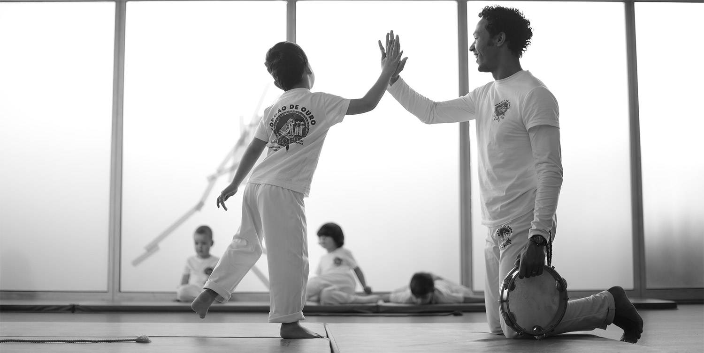
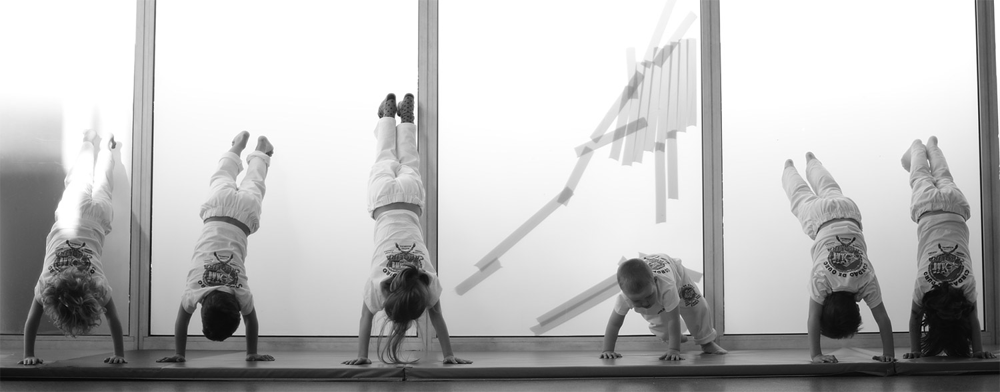
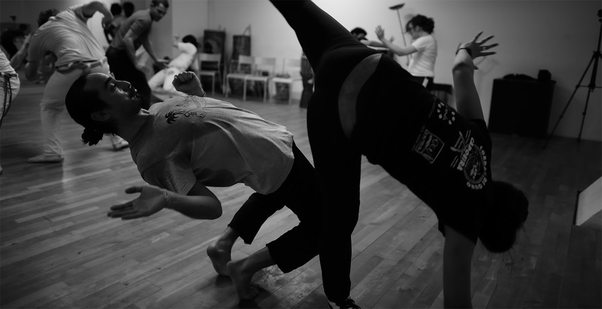

<main class="main">
  <section class="section__content">
    <div class="hero">
      <p class="title-xl uppercase">Nos Programmes</p>
    </div>
    <mat-tab-group
      mat-align-tabs="center"
      [backgroundColor]="'primary'"
      mat-stretch-tabs
    >
      <mat-tab label="Ecoles">
        <div class="tab__content">
          <h1>Capoeira à l'école</h1>
          <p class="color-primary">Capoeira, culture et éducation</p>
          <p>
            Le programme Capoeira Culture et Education va plus loin qu’une
            simple activité à l’école. L’objectif de ce programme est de
            contribuer à l’éducation des enfants en partenariat avec
            l’institution et/ou l’école, la famille et la société, en intégrant
            simultanément ces trois piliers majeurs dans le développement de la
            personnalité de l’enfant. Notre programme a été créé par le
            professeur Ederson Gonçalves (coordinateur du Groupe Cordão de Ouro
            Ile-de-France), avec le soutien d’un groupe expérimenté de Maîtres
            de capoeira et professionnels de la pédagogie enfantine.
          </p>
          <p>
            Notre programme se décline en 2 propositions et ce en fonction du
            projet éducatif et de la disponibilité de chaque établissement.
            Ainsi ce programme peut trouver sa place durant le temps scolaire ou
            bien sur le temps périscolaire. En plus de l’enseignement de la
            capoeira à travers sa forme ludique, nous proposons au sein de notre
            programme des options qui peuvent être ajoutées en accord avec le
            projet annuel de l’école. Programmes spécifiques pour écoles et
            institutions privées, associations de parents, centre
            socio-éducatifs. Pour plus d’information, nous consulter.
          </p>
        </div>
        
        <atom-button
          class="btn"
          [type]="'button'"
          [text]="CONTACT_BTN_TEXT"
          (clickEvent)="onNavigateContact($event)"
        ></atom-button>
      </mat-tab>
      <mat-tab label="Enfants">
        <div class="tab__content">
          <h1>Enfants</h1>
          <p class="color-primary">Camaradinhas</p>
          <p>
            Les mouvements de base de la capoeira sont adaptés et enseignés aux
            enfants à travers des jeux. Notre méthode probante est de faire
            appel à l’imaginaire ; cela permet de capter l’attention et la
            concentration des enfants. La capoeira devient plus qu’un sport pour
            la vie de L'Enfant qui la pratique, ça devient aussi un jeu, un
            moment récréatif. Le jeu symbolique est la représentation corporelle
            de l'imaginaire, avec la fantaisie qui y prédomine, mais établissant
            une connexion avec le monde réel à travers des activités
            psychomotrices, qui lient l'enfant à la réalité.
          </p>
          <p>
            Parmi divers aspects culturels et historiques, nous basons notre
            méthode sur deux piliers centraux: la naturalité des mouvements de
            l'enfant combinée aux coups, esquives et mouvements typiques de la
            pratique de la capoeira. Dans cet aspect, l'enfant développe ses
            mouvements selon sa compréhension, de la manière la plus naturelle
            possible; par conséquent, l'enfant ne produit pas de mouvements
            incorrects. Dans l'analyse de l'enseignant, l'attention sera portée
            sur la sécurité de l'enfant, c'est-à-dire qu'il pourra développer
            ses mouvements afin de ne pas se mettre en danger. Avec le
            développement psychomoteur, combiné à l'entraînement, ces mouvements
            sont travaillés par l'enseignant pendant les cours.
          </p>
          <p>
            Le deuxième pilier utilisé dans notre méthode est la créativité.
            Directement lié au naturel, l'enfant commencera au fil du temps à
            développer son propre jeu au sein de la capoeira, son style, sa
            ginga... il va créer son identité dans la capoeira, des
            caractéristiques qui aideront à la formation de sa personnalité.
          </p>
          <p>
            La présence de la musique, de l’histoire et de la danse au sein de
            la capoeira sont également des aspects forts qui font de la capoeira
            un excellent outil pour aider à l'éducation de l'enfant.
          </p>
        </div>
        
        <organism-sessions
          *ngFor="let session of sessionsKids; let even = even; let odd = odd"
          [style]="{ odd: odd, even: even }"
          [sessionsKids]="session"
        ></organism-sessions>
        <atom-button
          class="btn"
          [type]="'button'"
          [text]="CONTACT_BTN_TEXT"
          (clickEvent)="onNavigateContact($event)"
        ></atom-button>
        <!-- <atom-button
          class="btn"
          [type]="'button'"
          [text]="SUBSCRIPTIONS_BTN_TEXT"
          (clickEvent)="onNavigateSubscriptions($event)"
        ></atom-button> -->
      </mat-tab>
      <mat-tab label="Ados-Adultes">
        <div class="tab__content">
          <h1>Adultes / Adolescents</h1>
          <p class="color-primary">Pour le corps et pour l’esprit</p>
          <p>
            Le dialogue corporel, l’improvisation, l’équilibre, tout comme les
            notions d’espace, de temps, de rythme et de musique sont des
            principes fondamentaux de la pratique de la capoeira.
          </p>
          <p>
            Force, résistance et flexibilité musculaire : Un programme
            d’entraînement spécifique a été soigneusement étudié et développé
            par nos professionnels à la recherche de meilleures performances.
          </p>
          <p>
            Musicalité : La musique par elle-même, calme, stimule la mémoire,
            soulage la douleur et aide à l’exercice physique. Elle libère la
            dopamine et provoque une sensation de bien-être. Dans la capoeira,
            en plus de la présence de la musique pendant les cours, des séances
            de chansons de capoeira et des instruments de percussion (utiliser
            dans la capoeira) sont prévus chaque semaine.
          </p>
          <p>
            En plus... : maculele et danses afro-brésiliennes, samba de Roda,
            excursion au Brésil et d’autres pays, à la découverte de la capoeira
            et ses origines voilà quelques programmes que nous proposons en
            plus.
          </p>
          <p>
            L’ICS France offre un programme de cours présentiels pour les
            adolescents et les adultes à Colombes (92700), les lundis, mercredis
            et vendredi. Les lundis et mercredis nous proposons des
            entrainements techniques et développement du jeu de capoeira dans la
            roda. Les vendredis l’entrainement est « libre ». Vous avez à votre
            disposition l’espace, le matériel et la présence d’un professeur qui
            sera là pour vous donner des instructions. Individuellement ou en
            groupe vous pouvez vous concentrer à vous entrainer à la musique,
            les acrobaties, aux techniques de défense et attaque, séquences de
            mouvements… Vous avez à votre disposition également un programme
            d’entrainement en ligne sur le site www.icsfrance.fr, disponible
            exclusivement pour les adhérent de ICS France (accès privé). Dans ce
            programme vous trouverez des entrainements basiques que vous pouvez
            faire à la maison. Il y aura également du matériel téléchargeable.
          </p>
        </div>
        
        <organism-sessions
          *ngFor="let session of sessionsAdults; let even = even; let odd = odd"
          [style]="{ odd: odd, even: even }"
          [sessionsAdults]="session"
        ></organism-sessions>
        <atom-button
          class="btn"
          [type]="'button'"
          [text]="CONTACT_BTN_TEXT"
          (clickEvent)="onNavigateContact($event)"
        ></atom-button>
        <!-- <atom-button
          class="btn"
          [text]="SUBSCRIPTIONS_BTN_TEXT"
          (clickEvent)="onNavigateSubscriptions($event)"
        ></atom-button> -->
      </mat-tab>
    </mat-tab-group>
  </section>
</main>
